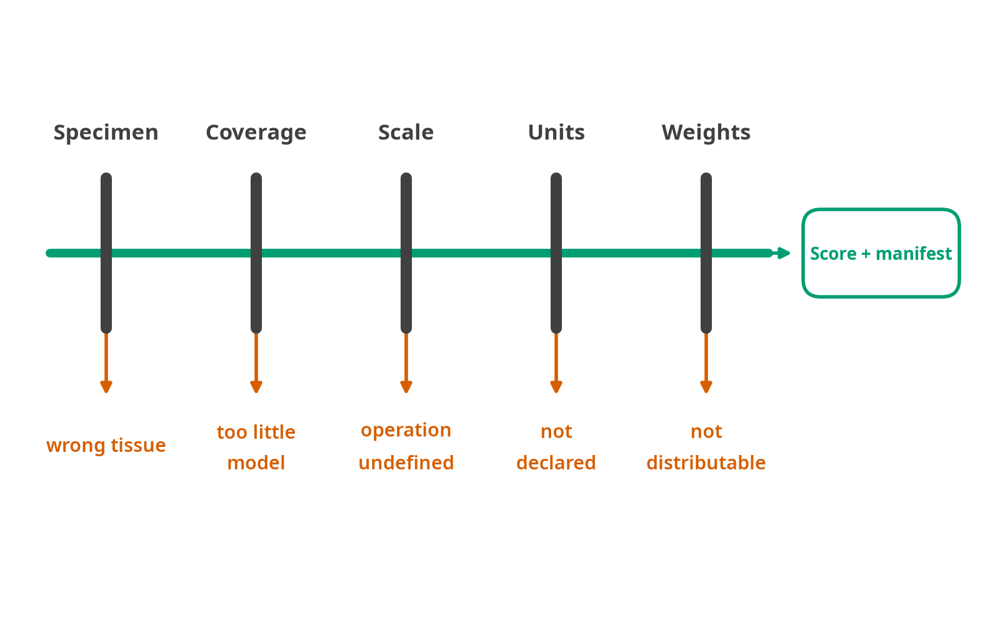

FALCONAge
Biological age and aging-clock scoring from multiomic data, in Python and R, on CPU or GPU.
FALCONAge computes biological age scores from molecular data. It reads what a laboratory actually produces, applies published aging clocks to it, and returns each score with its unit, its provenance, and an estimate of how much of it is measurement noise.
An aging clock is a supervised model mapping molecular features, most often DNA methylation at specific CpG sites, to a single number. Roughly two hundred have been published since 2013, and they were not fitted to the same target. Some were regressed on calendar age, some on a survival-weighted composite and then rescaled into years, some on the rate of change in organ-system biomarkers tracked longitudinally, some on cumulative stem-cell divisions. Those are four different quantities. Reported together as “biological age” they look comparable, and the arithmetic that mixes them has no defined meaning.
This package treats that as the problem to solve rather than a caveat to mention. Every catalogue entry declares the target its clock was trained on, the unit the output carries, and which downstream operations are consequently defined. Asking for age acceleration on a pace-of-aging clock returns an error naming the units, not a number. Scoring a placenta clock on blood is refused. Scoring saliva on a whole-blood clock warns and cites the size of the error measured in people sampled both ways. The refusals are the design, and each one names the measurement it rests on.
The second half of the package is about what a single number is worth. Technical replicates of the same DNA differ by up to nine years on prominent clocks, and only 18% of probes on the 450K array reach an intraclass correlation of 0.5 in whole blood. A score reported without that context invites a reader to believe a difference that the assay alone could have produced. FALCONAge propagates published per-probe reliability through each clock’s own weights to give a standard error per sample, and calibrates distribution-free prediction intervals against known ages.
It is one numerical core in Python, called from R through reticulate, so a result obtained in either language is the same bits rather than two implementations that agree approximately. The catalogue holds 178 clocks; 69 of them score offline, and the rest are documented with the reason they cannot, which is licensing or untraced provenance rather than missing code.
These are instruments for population research, not a clinical judgement about one person. FALCONAge computes what the papers specify and records how it did so; whether a given clock is fit for a given decision is not something a scoring tool can certify, and the limits below say what else it cannot do.
Input
| Input | Reader | Notes |
|---|---|---|
| Raw Illumina IDATs | read_idat_dir() |
27K, 450K, EPIC v1, EPIC v2. Full chain to betas: pOOBAH detection, noob background correction, optional BMIQ |
| Beta matrix (CSV, Parquet) | read_betas() |
|
| GEO series matrix | read_series_matrix() |
|
| Nanopore bedMethyl | read_bedmethyl_dir() |
modkit output, with per-site coverage kept alongside; 5mC and 5hmC read separately |
| RRBS coverage files | read_rrbs_dir() |
|
| Targeted panels | read_panel() |
Pyrosequencing, EpiTYPER, amplicon. The declared CpG list is checked, not intersected |
| Olink NPX | read_olink() |
Proteomics. Already log2 and relative; the scale is left alone |
| SomaScan RFU | read_somascan() |
Proteomics, log2 by default because that is what the models were fitted on |
| Bulk RNA-seq counts | read_counts() |
Transcriptomics, with the full RLE → log10 → z → YuGene chain |
| Clinical chemistry | read_clinical() |
Units declared rather than guessed |
| ComputAgeBench | read_computage_bench() |
65 harmonised case/control studies, pinned to a commit |
Output
- One score per sample per clock, for as many of the 178 catalogued clocks as your features support
- A standard error on every score, propagated from published per-probe reliability through each clock’s own weights, and a distribution-free prediction interval
- A coverage figure per clock, and what the probes you are missing cost in years
- A run manifest holding the package and registry versions, the SHA-256 of every coefficient file, the array manifest that decoded your IDATs, the reliability table behind the intervals, the device and floating-point precision, the imputation policy, and every warning raised
Execution. One numerical core in Python, called from R through reticulate, on CPU or GPU.
Refusals. A saliva sample scored on a whole-blood clock (measured at 3.83–16.46 years of error in the same people). Cell-free DNA on any array clock. Age acceleration on a pace-of-aging clock. A cohort-centred clock given one sample. Each refusal names the measurement behind it.
Scope and limitations
What the tool is for, what it declines to do, and what it cannot do yet. Three different questions with three different answers, in the order a model card puts them.
Intended use
The reason, rather than the disclaimer. Reliability varies sharply between clocks, and technical reproducibility and biological stability are separate properties that do not track together: a clock can be highly repeatable on split samples and still move with a meal or a night’s sleep. So a score that survives replication is not thereby measuring a stable trait, and the two failures need different evidence to rule out. The science of aging clocks sets out, clock by clock, which is established and which is contested.
Out-of-scope use

Each gate is a place where the wrong answer is available and cheap. A clock scored on the wrong specimen, on too little of its own model, on a scale that does not admit the operation asked for, on clinical values whose units were never stated, or from a weights file that cannot be redistributed, all return a number that looks exactly like a right one. What comes out of the last gate is a score and a manifest recording which gates it passed and on what evidence.
Each of these is a silent wrong answer somewhere else, so each is a hard failure here:
- Fill a missing probe with zero. In beta space zero means completely unmethylated, which is a real and extreme measurement. An absent feature takes the clock’s reference value: the authors’ own for Horvath 2013, DunedinPoAm38, CorticalClock and AltumAge, a healthy adult blood mean for 22 other blood clocks. Where there is none, it takes the mean of the clock’s present features, and the run names that fallback with the share of the weight it touched. Every substitution is counted in the manifest.
- Guess clinical units. PhenoAge has SI and conventional variants that disagree by years.
units=has no default. - Score below the coverage floor. A clock whose features are largely absent is skipped and named, rather than scored on mostly-imputed input.
- Treat probes as interchangeable. Coverage is measured twice: by count, and by the share of the model’s total |coefficient| the present features carry. A clock can clear a 92% feature floor having lost the probes that do a third of the work, and only the second number sees it.
probe_loss()reports both before you score anything. - Claim coverage means validity. High coverage says the probes are present. It says nothing about whether coefficients fitted in one tissue, species or population transfer to yours; that judgement stays with you, and Choosing a clock lays out the grounds for it.
- Let a paper-versus-implementation disagreement pass silently. Eleven clocks in the catalogue are scored from coefficients that differ from what their paper describes: a feature count, a changed statistic, a constant. Each carries the note, and it is raised as a warning at score time, not left on a documentation page.
Known limitations
Said here rather than left to be inferred. The science page §19 and §20 cover each in full, with the algorithms and the reason each is or is not blocked.
- It does not repair cross-platform probe loss. It measures it twice over: by count, by coefficient mass, and now in years per clock per platform. It cannot undo it. The liftover mapping tables encode concordance measured on paired samples and are not derivable from the array manifests.
- It has no proteomic or transcriptomic clocks in the catalogue. The readers and the full preparation chains ship; no entry declares either
data_type, because every published model in both families is licence-restricted and would enter as alicensedscaffold. Scoring a proteomic matrix today refuses with “no clocks to score”, which is accurate rather than broken. - It does not correct dye bias by default. The step exists and is opt-in. Measured on real IDATs our implementation moves the median beta by +0.10 to +0.12, because a correct correction needs the normalisation control probes and their addresses are not in the manifest we can fetch.
- It has no foundation-model backend. The
NeuralClockarchitecture ships, safetensors only. CpGPT and MethylGPT are interesting here for zero-shot imputation and array conversion rather than as another age predictor. - 105 of the 178 catalogued clocks have no traced coefficient source. A per-clock literature hunt, not a technical problem, and
primary_source_traced: falseis the honest record of it.
Removed from this list, because they now exist: array normalisation (pOOBAH, noob, BMIQ, probe masks), the raw-IDAT path, single-cell scoring, and the transcriptomic per-dataset centring refusal.
Further reading
- Getting started, install, score, interpret, in both languages.
- Choosing a clock, by the question you asked, by what the scale permits, and by whether the coefficients transfer to your data at all.
- Clock catalogue, all 178, searchable.
- Python reference · R reference
- GPU support, what was verified on real hardware, and why
device="auto"is CPU.
The whole site is also downloadable as PDF or markdown; see the Download menu.
Citation
APA:
Hunakunti, B. (2026). FALCONAge: Multiomic biological age and aging clock scoring in Python and R (Version 1.0.0) [Computer software]. https://github.com/bhagesh-h/FALCONAgeBibTeX:
@software{falconage2026,
author = {Bhagesh Hunakunti},
title = {FALCONAge: Multiomic Biological Age and Aging Clock Scoring in Python and R},
year = {2026},
version = {1.0.0},
url = {https://github.com/bhagesh-h/FALCONAge},
license = {GPL-3.0-or-later}
}In R, citation("FALCONAge"). The machine-readable version is CITATION.cff, which is what GitHub’s Cite this repository button reads.
The clock FALCONAge computed for you is somebody else’s work, and citing FALCONAge does not cite it. Every registry entry carries its primary reference, so the list for an analysis comes out of the analysis:
fa.registry.load().get("grimage2").cite("bibtex")cite_clock("grimage2", "bibtex")